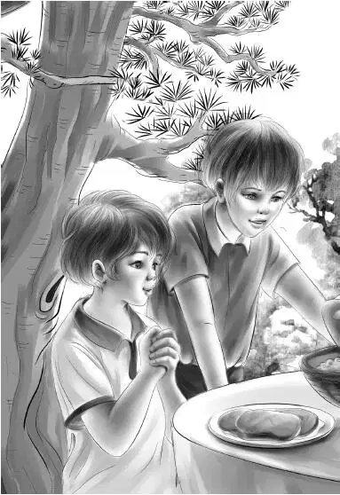

Chapter 14 Time for Celebration
奥登一家刚离开，戴维第二天就把小狗从缅因州带了回来。
回来的时候天色已晚，好在戴维擅长在林间赶路，他和小狗基本上都没发出什么声音。不过当他们到家时，却意外地发现，珞凡早已经守候在门口了——她正专注地侧耳倾听着外面的动静。
看到小狗在戴维身旁欢快地奔跑，老奶奶脸上绽开了笑容，这是她喜欢的景象。
“姨奶奶，它叫‘偶的’。”戴维说道，“让它闻闻您，再跟它说说话，它不咬人的。”
不过珞凡和小狗套近乎的手段要比戴维高明得多。她只是把门敞开，让狗狗闻到了饭菜的香味——晚餐是土豆炖肉，里面还加了芜菁、胡萝卜和洋葱。小狗便乐颠颠地跑进了小屋，面对着珞凡蹲在地上，两只前爪抬了起来。
“看啊，它在笑呢！”戴维叫道，“看它的样子，是像在笑吧？”
“好狗狗。”珞凡说道，“来，握个手。”
“偶的”之前并没有学过握手，不过当老奶奶握住它的前爪时，它立刻在地上蹲得笔直，尾巴欢快地摆动起来。它似乎知道，只有跟着珞凡才能吃到晚餐。
“小宝贝，晚饭太烫了，你还不能吃！”珞凡说道，“这是给你准备的，戴维，快坐下，你肯定饿坏了吧？”
“差点就饿晕了。”戴维说，“为了不耽搁赶路，一路上都没停下来吃饭，没想还是半夜才到家。”
“已经半夜一点了。”珞凡说着，切了些薄薄的肉片，在汤盘里码了些蔬菜，接着端上来一盘玉米饼，又倒了一大杯牛奶。
“偶的”规规矩矩地蹲在地上，眼巴巴地望着老奶奶的每个举动。
“这么好的饭菜，可不能给‘偶的’吃。”戴维说，“给它吃剩饭就好了。”
“偶尔一次嘛，戴维。”珞凡说，“就当今晚是改善伙食好了。”
“‘偶的’可要高兴坏了。”戴维说，“我分点肉给它吃，现在已经不烫了。它的胃口可好了，面包、蔬菜、糖果，全都喜欢吃。”
“偶的”一边吃，一边不停地摇着尾巴。它把最后一点残渣舔得干干净净后，跑到珞凡的身前，把两只前爪搭在了她的大腿上。
“好狗狗！”珞凡拍了拍它的脑袋，“你也是我的宝贝呢。”
“还好您不讨厌它。”戴维说。
“怎么？其他印第安人不喜欢它吗？”珞凡问道。
“不怎么喜欢，因为他们每家都养着两三只狗。走的时候我没说自己要去哪儿，他们也没问。”
“明白了！”珞凡说道，“快去睡觉吧！”
戴维和珞凡相处得非常融洽，转眼间，一个月过去了。奥登一家也回来了。车子刚刚开进树林，孩子们就听到了小狗的叫声。
“肯定是‘偶的’！”班尼欢快地笑道。
话音刚落，戴维和珞凡就从房子后面转了出来，“偶的”再次叫了起来。
“别吵。”戴维一声令下，小狗狗立刻不吱声了。
奥登一家人几乎不敢相信自己的眼睛。“天哪，戴维，你至少胖了十磅。”班尼叫道。
“是啊。”戴维大笑起来。再次见到老朋友，他感到非常开心。
“你们在房子后面做什么？”亨利问道。
“过来看看吧！”珞凡微笑着说，“我们两个都不愿待在屋里，所以戴维就把餐桌搬到屋外来了。”
只见高高的松树下摆放着一张大木桌，桌子两侧各放了一把长椅。
“椅子做得很长，这样就方便我们招待客人啦！”戴维说。
“就比如我们这种客人！”班尼兴奋地叫道。
“还有呢，奥登先生。”戴维说，“我和姨奶奶正在写一本关于印第安人的书。”
“快让我看看，这可是我听到的最好的消息了！”奥登先生说道，“我们可不想让印第安人生活中最美的那一面失传！”
说着，奥登一家走进了屋子，翻看起那本书来。
“连一半都没写到呢。”戴维说，“我们用印第安语记录了很多古老的故事，配以印第安传统插画，尽量让它们显得原汁原味。还有，姨奶奶手工艺品的制作方法也被记录下来了——这是篮子的设计图，这个是地毯的。我们两个还记得不少歌曲，不过我得先把它们写下来才行。”
就在这时，卡特先生的脑袋从门口探了进来。“我把大家的晚饭带来了！”他对珞凡说，“这下您不用担心这么多人的口粮了。”

“真是太谢谢啦。”珞凡说，“家里还真没有这么多吃的，咱们就用你带来的食材做晚餐吧。看，那边可是戴维亲手做的。”
只见屋外有一座石头砌成的灶台。
“这灶台搭得太是时候了！”班尼欢呼起来，“我们正好带了牛排过来，今天可以狂欢喽！”
大家一一坐了下来，就在这时，“偶的”嗖地蹿到桌子下，趴在亨利的脚上。班尼朝桌子底下看了看：“真希望你趴在我的脚上。不过，你可能把亨利当成了戴维，他们两个身材差不多。”
席间的气氛非常热烈，维莉和戴维开心地聊着天，班尼和珞凡有说不完的话，杰西则跟卡特先生聊得兴致勃勃。亨利看了看爷爷说：“好热闹啊！”
“热闹才好，”爷爷说，“仔细听听，你就能知道大家的近况了。”
只听珞凡告诉班尼说，戴维给她买了条暖烘烘的毯子，戴维对维莉讲起了珞凡是如何从树林里取材，制成了画画用的颜料。卡特先生则对杰西说，戴维今年秋天就可以上学了。
“戴维这回可有的忙咯！”爷爷说，“奥斯古博士说，他把戴维拉进山里考验了一番，决定请他去当暑期工呢。”
“我之前从来都不知道，世界上还有这么多美好的事情！”戴维说。
这就是现在的戴维。
他找到了一份正式工作，多了一个姨奶奶，得到了一家人的帮助，还养了一条忠实的猎犬，这一切都让他感到十分满足，别无所求。
奥登一家收拾好行李，准备离开了。
“我们可不会说别离的话，”班尼总结道，“我们要说，很快会再见。”
就这样，孩子们并没有依依惜别，只说了下次再见。
回家的路上，班尼问道：“对了，爷爷，咱们来年夏天有什么计划？”
“想知道么？我偏偏不告诉你！”爷爷打趣道。
“您的意思是，您都想好了？”
“我说过这话吗？没有吧？”
“您的表情分明就是这样说的。”
“哦，天哪。”爷爷说，“下次我一定要注意我的表情了！”
班尼缠了爷爷半天，终于安静下来。他知道，只有时候到了，爷爷才会告诉他们的。
“好吧，不说算了。”班尼最后说道，“总之，不管咱们去哪儿，肯定又是一段精彩的故事，对吧，爷爷？”